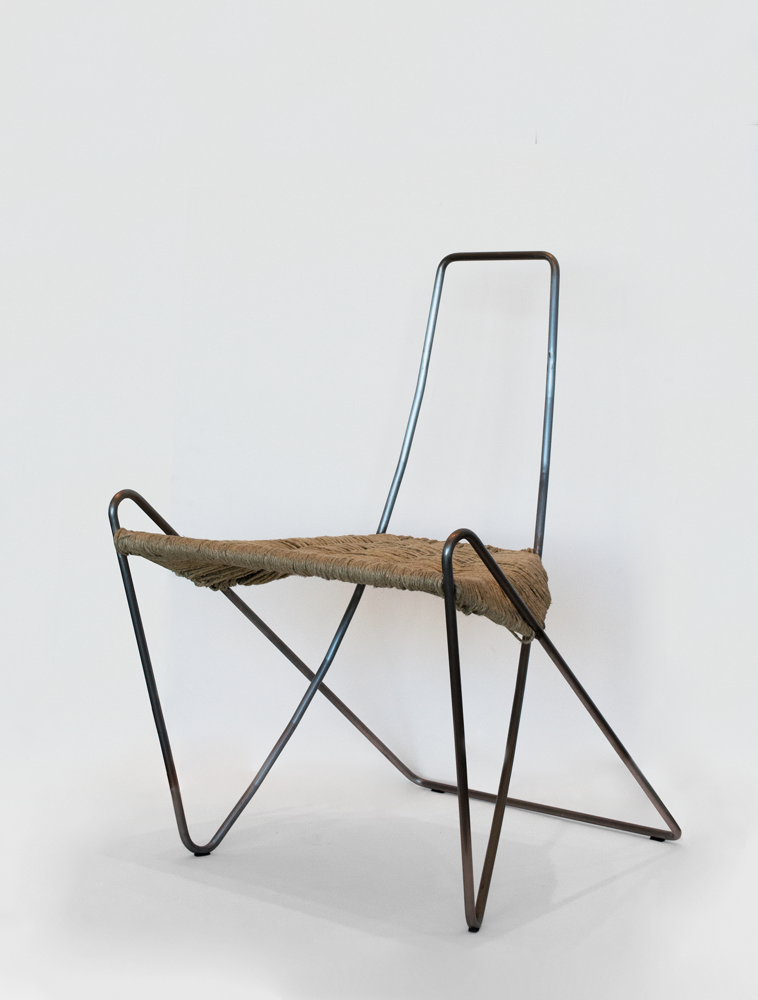

Chair
Independent Design Project
January — May 2016
The frame of the chair is a single loop in space, intertwining the seated individual and exterior space. The seat—left void by the frame—is then woven into place. The chair creates a space that is itself "bound"—woven, knotted, stitched—through both frame and seat. The detail of the continuous loop allows resting hands to instinctively grasp the exposed frame and enter the bounded space of the chair.

